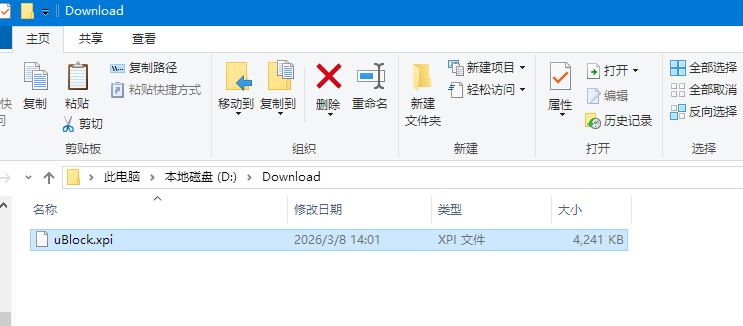
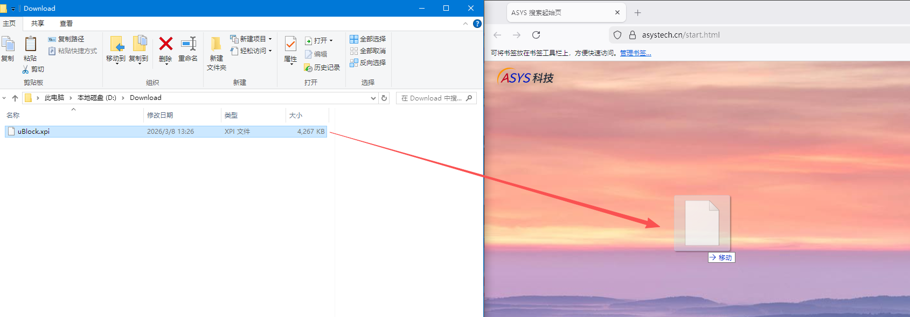
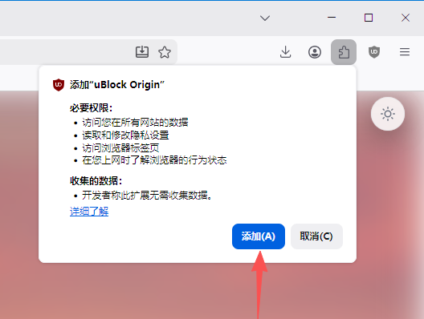

由于部分网络限制，Vantage 可能无法为您自动拉取扩展程序。请按照以下三个简单步骤手动部署：
您可以在下载页面点击下载，也可以前往 uBlock Origin 的代码仓库，下载最新正式版的 `.xpi` 安装文件。请注意：必须下载文件名末尾带有 signed 标记的文件，这代表它是经过官方安全签名的正式版本。
前往 GitHub 仓库下载
打开 Vantage 浏览器。在系统的文件管理器中找到您刚才下载好的 `.xpi` 文件，按住鼠标左键，将其直接拖动到 Vantage 浏览器的窗口内部然后松开鼠标。

此时浏览器界面会弹出一个安全安装提示框。点击弹窗中的“添加”按钮，即可彻底完成安装并立即生效。

Vantage 默认配置了 uBlock Origin 以保障纯净的浏览体验。但在实际使用中，中国大陆地区的用户通常无法自动下载该扩展。
此问题源于上游策略：Mozilla 的附加组件服务不被中国的相关广告商及合规政策允许向中国大陆 IP 提供此类强效广告拦截插件。这是一个网络与合规层面的硬性阻断，因此我们无法在浏览器代码层面解决该限制。